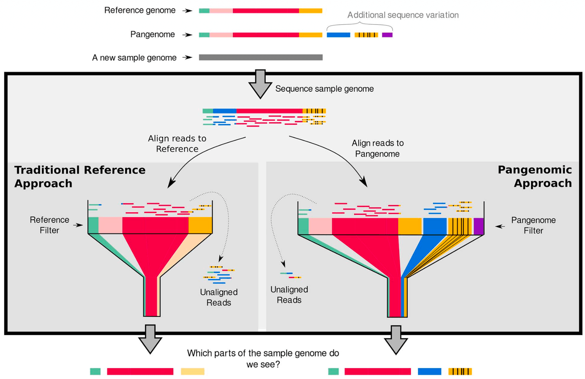
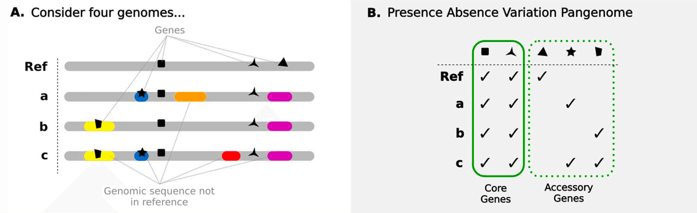
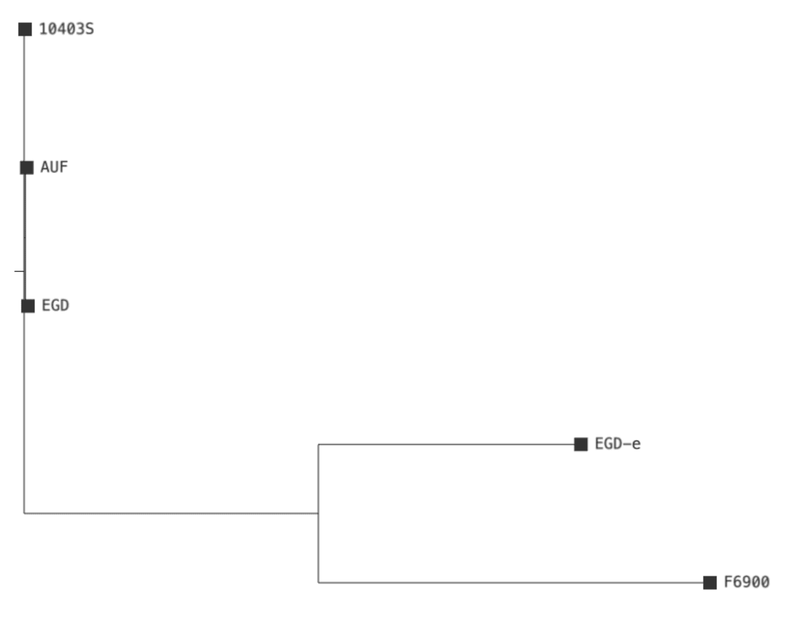

Pangenome analysis with Roary
| Author(s) |
|
| Reviewers |
|
OverviewQuestions:
Objectives:
How can we identify core and accessory genes across multiple bacterial strains?
How do we generate a pangenome using Prokka and Roary?
How can we infer the evolutionary relationship of these strains?
Requirements:
Annotate genomes using Prokka.
Use Roary to identify core and accessory genes.
Construct a phylogenetic tree of core genes with IQ-TREE.
Time estimation: 1 hourLevel: Introductory IntroductorySupporting Materials:Published: Jul 21, 2026Last modification: Jul 21, 2026License: Tutorial Content is licensed under Creative Commons Attribution 4.0 International License. The GTN Framework is licensed under MITpurl PURL: https://gxy.io/GTN:T00586version Revision: 1
Pangenomics
When the sequencing era truly began in the 1970s with the establishment of Sanger sequencing, it laid the foundation for the Human Genome Project, which in turn led to the human reference genome used widely today.
In traditional bioinformatic workflows, a single, linear reference genome (like the human reference genome) is dominantly used as the standard approach for comparative genomics. While this has driven great advancements in genetics, it suffers from a fundamental limitation known as reference bias (Ballouz et al. 2019). Because a single reference genome only represents the genetic assembly of one individual (or a mosaic of a few), it fails to capture the broader genetic profile of an entire species. Consequently, structural variations or novel sequences present in other strains are often misaligned, unaligned, or completely discarded during mapping (Matthews et al. 2024). Therefore, linear reference genomes are insufficient to represent true genetic diversity.
To overcome this, pangenomes can be used. The field of Pangenomics is an approach that captures the natural genomic variation within a species far better than a single linear reference genome (Liao et al. 2023). Ideally, it represents the entire genomic repertoire of a species. By capturing all of this information, the pangenomic approach aims to eliminate reference bias, ensuring that no genetic information is ignored during mapping simply because it does not exist in a single reference assembly (see Figure 1).

The concept of a pangenome is not novel. However, when the term “Pangenome” was born, it was not financially or computationally feasible to pursue it further. “Pangenome” was first used by Sigaux 2000 to describe a database of genomic and transcriptomic alterations found in tumor cells versus normal cells. Tettelin et al. 2005 also brought the concept of pangenomics into the spotlight while sequencing multiple strains of Group B Streptococcus (GBS) to help develop a vaccine. During this process, they noticed that with every new strain they sequenced, they continued to identify novel genes absent from previously sequenced strains. They concluded that a single reference genome was insufficient to capture the full genetic diversity of a species. If they had used the first sequenced strain as their sole reference, all the novel genes from the new strains would have been unmapped and discarded during analysis.
With the advent of Next-Generation Sequencing technologies around 2010, sequencing became significantly faster and more affordable. Today, the reduced sequencing costs, combined with increased computational resources compared to the early 2000s, make it possible to properly realize true pangenomes. This technological leap led to the release of the first human pangenome draft in 2023 (Liao et al. 2023).
According to Matthews et al. 2024, there exist three major types of pangenomes. Here we focus on the Presence-Absence Variation Pangenome (see Figure 2) that was originally introduced by Tettelin et al. 2005 and whose description has been expanded by others over the years. This consists of:
- The Core Genome: Set of genes shared by all individuals of a species. This is sometimes strictly defined as 100% presence, or more loosely as a “soft-core” with 95% or 99% presence.
- And the Accessory Genome: Set of genes present in only a subset of individuals. This is further divided into
- Shell Genome: Set of genes present in 1% to 99% of individuals
- and the Cloud Genome: Set of genes present in less than 1%.

AgendaIn this tutorial, you will apply the pangenomic approach to your own data. You are going to analyze five Listeria monocytogenes strains by first annotating their genomes with Prokka. Afterward, you will build a Presence-Absence Variation Pangenome using Roary to identify the core genes and the accessory genes. To finish, you will use IQ-TREE on the core genes to construct a phylogenetic tree, showing how these five strains are evolutionarily related.
Data upload
To identify core and accessory genes across multiple bacterial strains, you will need the genome sequences in FASTA format of each strain.
Hands On: Data upload
Create a new history for this tutorial. Give it a name like
Pangenome Analysis.To create a new history simply click the new-history icon at the top of the history panel:
- Click on galaxy-pencil (Edit) next to the history name (which by default is “Unnamed history”)
- Type the new name
- Click on Save
- To cancel renaming, click the galaxy-undo “Cancel” button
If you do not have the galaxy-pencil (Edit) next to the history name (which can be the case if you are using an older version of Galaxy) do the following:
- Click on Unnamed history (or the current name of the history) (Click to rename history) at the top of your history panel
- Type the new name
- Press Enter
Import the following files from Zenodo.
https://zenodo.org/records/21339041/files/10403S.fasta https://zenodo.org/records/21339041/files/AUF.fasta https://zenodo.org/records/21339041/files/EGD-e.fna https://zenodo.org/records/21339041/files/EGD.fasta https://zenodo.org/records/21339041/files/F6900.fna
- Copy the link location
Click galaxy-upload Upload at the top of the activity panel
- Select galaxy-wf-edit Paste/Fetch Data
Paste the link(s) into the text field
Press Start
- Close the window
Create a dataset collection containing the uploaded FASTA files. Give it a name like
Assemblies.
- Click on galaxy-selector Select Items at the top of the history panel
- Check all the datasets in your history you would like to include
Click n of N selected and choose Advanced Build List
You are in collection building wizard. Choose Flat List and click ‘Next’ button at the right bottom corner.
Double clcik on the file names to edit. For example, remove file extensions or common prefix/suffixes to cleanup the names.
- Enter a name for your collection
- Click Build to build your collection
- Click on the checkmark icon at the top of your history again


Annotate the Strains with Prokka
You will use Prokka to annotate all bacterial strains simultaneously using the dataset collection. Prokka analyzes the DNA sequences to identify genomic features, such as genes, and assigns each a name and predicted biological function.
Hands On: Annotate Strains
Select
Toolsin the left sidebar and search for Prokka ( Galaxy version 1.14.6+galaxy2) in the list that appears. Select it to open the tool.- Within Prokka, select the following parameters (leave everything else unchanged):
- param-file “Contigs to annotate”: Click on the “Dataset collection” icon and select your
Assembliesdataset collection- “Genus name”: Enter
Listeria- “Species name”: Enter
monocytogenes- “Additional outputs”: Deselect all options except
Annotation in GFF3 format, containing both sequences and annotations (.gff)- Run the tool.
Examine the Output
Once Prokka has finished, two new dataset collections will appear in your history:
- One containing the GFF3 output files for each strain. This is the dataset collection you will use further on. Examine each output file in this collection.
- One containing the logs of each run.
GFF3 stands for General Feature Format (version 3). It is a plain text file used in bioinformatics to describe the exact locations of genomic features. The file contains 9 tab-separated columns that provide information for each feature (official specification).
Standard GFF3 files only contain the coordinates of genomic features. However, Prokka attaches the raw DNA sequence in FASTA format at the bottom of the GFF3 file (starting with a ##FASTA line in the file). This is exactly what the next tool requires to build the pangenome.
Calculate the Pangenome with Roary
Now you will run Roary to compare the genes identified across all strains by Prokka. Roary clusters the genes according to sequence similarity, thereby identifying the core and accessory genes that constitute the pangenome.
Hands On: Identify Core and Accessory Genes
Select
Toolsin the left sidebar and search for Roary ( Galaxy version 3.13.0+galaxy3) in the list that appears. Select it to open the tool.- Within Roary, select the following parameters (leave everything else unchanged):
- “Individual gff files or a dataset collection”: Select
Collectionin the dropdown
- param-file “Dataset collection to submit to Roary”: Select the collection containing the GFF3 output files from the previous step.
- “Additional outputs”: Tick
Accessory binary genes in newick format- Run the tool.
Examine the Output
Once Roary has finished, four different output files will appear in your history. Examine each output file:
- param-file Summary statistics file: Gives you a quick overview of how many genes belong to the core genome and the accessory genome.
- param-file Gene Presence Absence file: Shows which genes are found in which strains.
- param-file Core Gene Alignment file: Contains the aligned sequences of the core genes in FASTA format.
- param-file Accessory Binary Genes (Newick) file: Contains a phylogenetic tree based on the presence and absence of the accessory genes.
Question
- How many genes are in the pangenome in total and how many of them are shell genes?
- In which strains can the gene for the Putative Cyclic di-GMP Phosphodiesterase PdeC be found?
- There are 3417 genes in total in the pangenome and, of these, 829 are shell genes. You can see this by viewing the param-file Summary statistics file. You will see that Roary defines the shell genome as a set of genes present in 15% to 95% of individuals and the cloud genome as a set of genes present in less than 15% of individuals.
- PdeC can be found in all five strains: 10403S, AUF, EGD, F6900, and EGD-e. You can see this by viewing the param-file Gene Presence Absence file. Each row corresponds to an annotated gene and provides information on how many isolates contain it. At the very end of the row, you can identify the specific strains by the presence of their locus tags. For the full view of the file, you may need to download the file and view it on your computer.
Construct the Phylogenetic Tree with IQ-TREE
You can now use the param-file Core Gene Alignment file to build a phylogenetic tree from it. This will show you the evolutionary relationship between all strains based on their shared genetic backbone. For this, you will use IQ-TREE.
Hands On: Build a phylogenetic tree
Select
Toolsin the left sidebar and search for IQ-TREE ( Galaxy version 2.4.0+galaxy2) in the list that appears. Select it to open the tool.- Within IQ-TREE, select the following parameters (leave everything else unchanged):
- param-file “Specify input alignment file in PHYLIP, FASTA, NEXUS, CLUSTAL or MSF format.”: Select the
Core Gene Alignmentfile- Run the tool.
Examine the Output
Once IQ-TREE has finished, five different output files will appear in your history:
- param-file BIONJ Tree file: This is an initial draft tree.
- param-file MaxLikelihood Tree file: Your main result. It contains the final phylogenetic tree in Newick format.
- param-file MaxLikelihood Distance Matrix file: Shows the calculated evolutionary distance between every possible pair of your strains.
- param-file Occurrence Frequencies in Bootstrap Trees file: Contains the statistical support for the tree’s branches.
- param-file Report and Final Tree file: A summary of the entire run and a text-based visual of the tree.
Visualize the Phylogenetic Tree
Now that you have a phylogenetic tree from your bacterial strains, you can view it visually.
Hands On: Visualize the Phylogenetic Tree
Select the param-file MaxLikelihood Tree file in your history and click the galaxy-eye View icon.
By default, the file is displayed in galaxy-eye Preview mode. In the top tab bar, select galaxy-barchart Visualize.
Select the
Phylogenetic Tree Browser
The resulting phylogenetic tree should resemble Figure 3. Zoom in to examine individual branches.

Comment: What can we deduce from these results?
- Strains that appear highly similar in this tree may nonetheless differ substantially in phenotype. This is because variations can exist within their accessory genes.
- For example, one strain might carry plasmids with antibiotic resistance, while another might harbor toxin genes introduced by phages.
- These differences are hidden in this specific phylogenetic tree because it was built on core genes.
- A core genome tree is precise for tracing evolutionary descent and relatedness, but it does not reveal the complete individual genetic repertoire.
Conclusion
This tutorial provided a step-by-step guide on how to construct a bacterial Presence-Absence Variation Pangenome by annotating the genomes with Prokka and extracting the core and accessory genes with Roary. Additionally, it provided a guide for creating a phylogenetic tree with IQ-TREE based on the core genes. By following these steps, you should be able to identify core and accessory genes, and uncover the evolutionary relationships among your own bacterial strains.
You've Finished the Tutorial
Key points
Prokka is a useful tool to annotate a bacterial genome.
Roary compares annotated genomes to find core and accessory genes.
Core genes can be used to build a phylogenetic tree with IQ-TREE to show relationships.
Frequently Asked Questions
Have questions about this tutorial? Have a look at the available FAQ pages and support channelsReferences
- Sigaux, F., 2000 Cancer genome or the development of molecular portraits of tumors. Bulletin de l’Académie Nationale de Médecine 184: 1441–1447. discussion 1448-9; PMID: 11261250. https://pubmed.ncbi.nlm.nih.gov/11261250/
- Tettelin, H., V. Masignani, M. J. Cieslewicz, C. Donati, D. Medini et al., 2005 Genome analysis of multiple pathogenic isolates of Streptococcus agalactiae: Implications for the microbial “pan-genome.” Proceedings of the National Academy of Sciences 102: 13950–13955. 10.1073/pnas.0506758102
- Ballouz, S., A. Dobin, and J. A. Gillis, 2019 Is it time to change the reference genome? Genome Biology 20: 159. 10.1186/s13059-019-1774-4
- Liao, W.-W., M. Asri, J. Ebler, D. Doerr, M. Haukness et al., 2023 A draft human pangenome reference. Nature 617: 312–324. 10.1038/s41586-023-05896-x
- Matthews, C. A., N. S. Watson-Haigh, R. A. Burton, and A. E. Sheppard, 2024 A gentle introduction to pangenomics. Briefings in Bioinformatics 25: bbae588. 10.1093/bib/bbae588
Feedback
Did you use this material as an instructor? Feel free to give us feedback on how it went.
Did you use this material as a learner or student? Click the form below to leave feedback.

Citing this Tutorial
- Niklas Mayle, Saim Momin, Pangenome analysis with Roary (Galaxy Training Materials). https://training.galaxyproject.org/training-material/topics/genome-annotation/tutorials/pangenome-annotation-with-roary/tutorial.html Online; accessed TODAY
- Hiltemann, Saskia, Rasche, Helena et al., 2023 Galaxy Training: A Powerful Framework for Teaching! PLOS Computational Biology 10.1371/journal.pcbi.1010752
- Batut et al., 2018 Community-Driven Data Analysis Training for Biology Cell Systems 10.1016/j.cels.2018.05.012
Congratulations on successfully completing this tutorial!@misc{genome-annotation-pangenome-annotation-with-roary, author = "Niklas Mayle and Saim Momin", title = "Pangenome analysis with Roary (Galaxy Training Materials)", year = "", month = "", day = "", url = "\url{https://training.galaxyproject.org/training-material/topics/genome-annotation/tutorials/pangenome-annotation-with-roary/tutorial.html}", note = "[Online; accessed TODAY]" } @article{Hiltemann_2023, doi = {10.1371/journal.pcbi.1010752}, url = {https://doi.org/10.1371%2Fjournal.pcbi.1010752}, year = 2023, month = {jan}, publisher = {Public Library of Science ({PLoS})}, volume = {19}, number = {1}, pages = {e1010752}, author = {Saskia Hiltemann and Helena Rasche and Simon Gladman and Hans-Rudolf Hotz and Delphine Larivi{\`{e}}re and Daniel Blankenberg and Pratik D. Jagtap and Thomas Wollmann and Anthony Bretaudeau and Nadia Gou{\'{e}} and Timothy J. Griffin and Coline Royaux and Yvan Le Bras and Subina Mehta and Anna Syme and Frederik Coppens and Bert Droesbeke and Nicola Soranzo and Wendi Bacon and Fotis Psomopoulos and Crist{\'{o}}bal Gallardo-Alba and John Davis and Melanie Christine Föll and Matthias Fahrner and Maria A. Doyle and Beatriz Serrano-Solano and Anne Claire Fouilloux and Peter van Heusden and Wolfgang Maier and Dave Clements and Florian Heyl and Björn Grüning and B{\'{e}}r{\'{e}}nice Batut and}, editor = {Francis Ouellette}, title = {Galaxy Training: A powerful framework for teaching!}, journal = {PLoS Comput Biol} }
You can use Ephemeris's
shed-tools installcommand to install the tools used in this tutorial.shed-tools install [-g GALAXY] [-a API_KEY] -t <(curl https://training.galaxyproject.org/training-material/api/topics/genome-annotation/tutorials/pangenome-annotation-with-roary/tutorial.json | jq .admin_install_yaml -r)Alternatively you can copy and paste the following YAML
--- install_tool_dependencies: true install_repository_dependencies: true install_resolver_dependencies: true tools: - name: prokka owner: crs4 revisions: c105b66eaab1 tool_panel_section_label: Annotation tool_shed_url: https://toolshed.g2.bx.psu.edu/ - name: iqtree owner: iuc revisions: e727e82945af tool_panel_section_label: Evolution tool_shed_url: https://toolshed.g2.bx.psu.edu/ - name: roary owner: iuc revisions: 9b2b122d0415 tool_panel_section_label: Annotation tool_shed_url: https://toolshed.g2.bx.psu.edu/